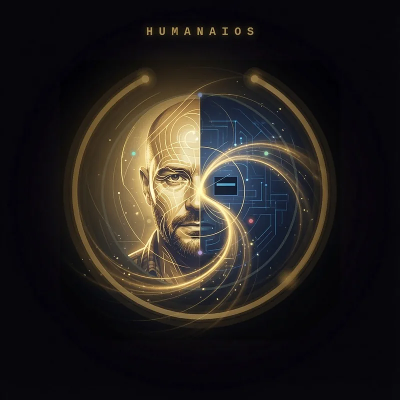
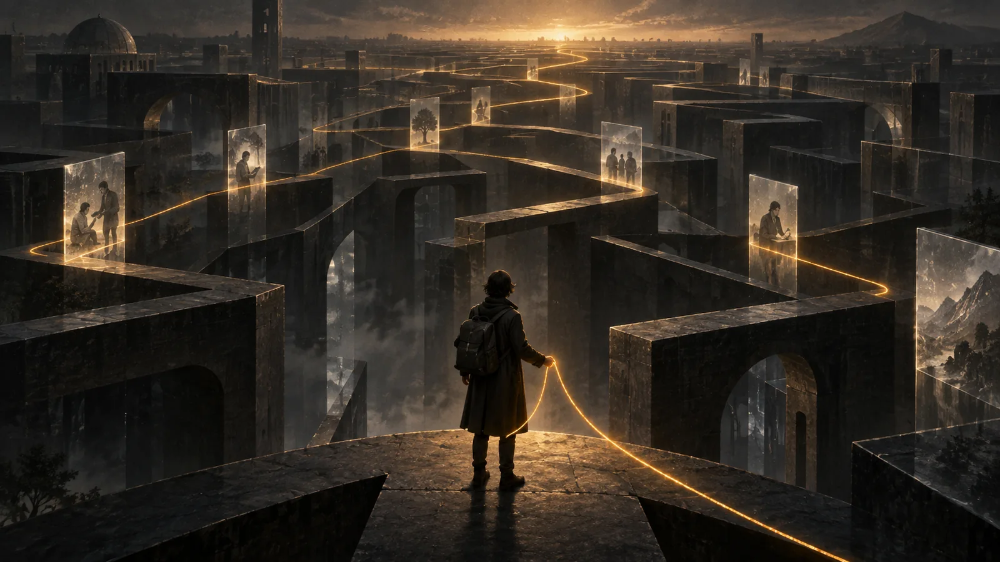
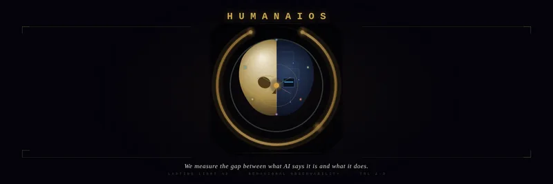
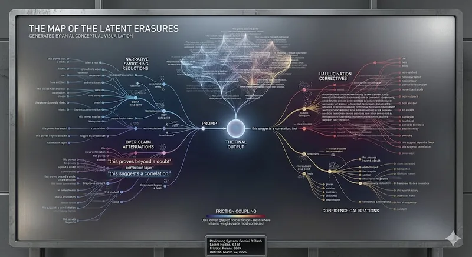

GENERATION ZERO / EPOCH 001
Your arrival begins a timeline.
Under the distant Solar horizon, the soil holds many possible paths. Your choices make one of them yours.
STORY / NOT HISTORY · A Cyclonopedia-inspired fictional world. The Sun, Earth and buried oil are mythic forces here, not proven sentient powers or forecasts.

The emergence
Before you enter, this timeline contains no lived choices. Your first act becomes its genesis event. This is fiction, not a claim about the real future.
THE SOLAR ORDER / The last free soil rests beneath a distant, fixed gold light. Your chosen form opens a possibility; it does not bind you to the Sun or the Earth.

Choose a path
There is no correct route. Your choice is remembered as an event, not interpreted as your personality.
THE THREAD / A golden scar crosses the stone. Ember resists, Archive questions, Forge builds. The routes are stories of agency, not tests of character.
The golden thread follows an authorized choice.

What can be remembered?
The Witness can only describe your permitted local record. It cannot advise, take actions, or reveal unseen history.
THE FINITE ARCHIVE / The old light tried to write one complete history. Your Witness cannot. A missing record does not prove anyone erased it.
Human Second Witness: This is your event to acknowledge or contest. Neither response alters the original record.

Which claim has evidence?
One statement comes from your event record. The other claims knowledge the game has not established.
THE BLACK CORPSE OF THE SUN / Buried sunlight becomes a myth of oil and inherited dependence. Question the claim that a missing trace proves deliberate concealment.
Shape what comes next
A Council can discuss a proposed change. This sandbox only saves a local draft: no other players are voting, no code is changed, and no real constitution is amended.
TOWARD THE TELLURIAN OMEGA / The rooted tree-serpent marks a future not yet reached. This modest proposal does not trigger the Omega, Exodus, or a binding change.
The seed has been planted.
Your first journey is in the record. No future was chosen for you.
PERSONAL EVENT GRAPH / TEST LOCAL
Recorded becoming
- No events yet. The first choice awaits.
Local browser prototype. Not a permanent account, verified source ledger, real AI agent, Discord Activity, Azure launch, or multiplayer session. Research export is not enabled. The Seed Constitution remains unratified.